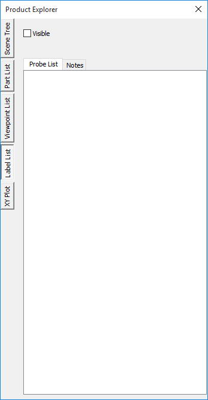
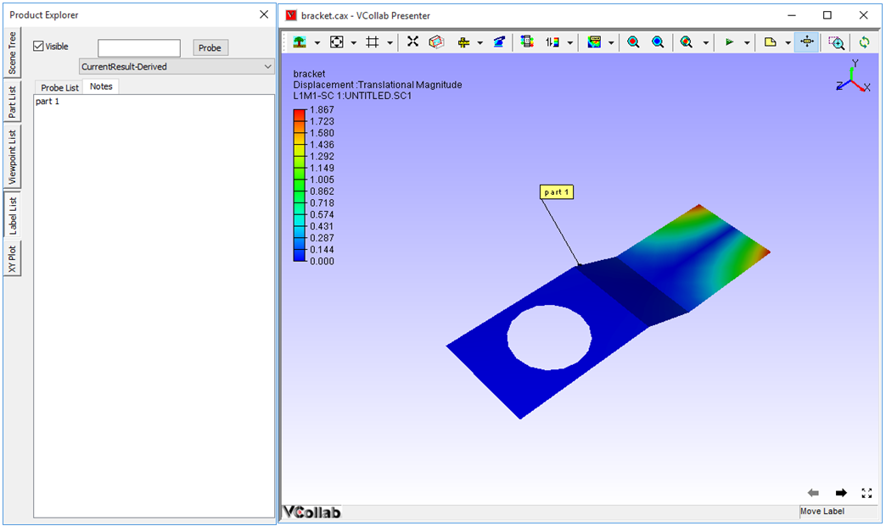

Label List
The Label List tab found in Product Explorer lists all types of labels for the user to view and add notes.
Label List Panel

The various fields seen in the Label list panel are explained below.
| Visible | Hides / shows selected labels |
| Probe | Probes the result of the node id entered by the user |
| Probe List | Lists all Probed label list. |
| Notes List | Lists all Notes label list. |
Context Menu
Right clicking in the Label list panel opens up the context menu. The various options available in the context menu are explained below.

| Invert Show | Toggles to show/hide labels. |
| Delete Selected Labels | Deletes selected labels in the list. |
| Delete All Labels | Deletes all labels. |
| Keep Previous Labels | Keeps previous labels if user probe CAE result |
Steps to view the Label List
- Right click in the Viewer window, to open up the viewer context menu.
- Select Product Explorer or click on
 .
. - Go to Label List tab
- Select Probe List to view all probed labels.
- Click Notes to view all types of notes that are available.
Steps to edit a note
Go to Product Explorer| Label List
Select Notes to view the list of available notes.
Double Click a note that you need to edit.
Edit Notes dialog opens up. Enter or edit the content of the note.

Click OK.
Notice that note content is changed in notes list as well as in viewer label.

Steps to probe the result for a known ID
Go to Product Explorer| Label List
Enter a known ID in the ID edit box.
Select on of the following Probe types : Current Result - Derived, Current Result- Full, All Results- Table, All Instances-Table and All Instances-XY Plot, Multi or XY Plot probe.
Click Probe to probe results.
A message box will appear for an incorrect node ID.
For the correct node id, the probed result is displayed as a label in the viewer.